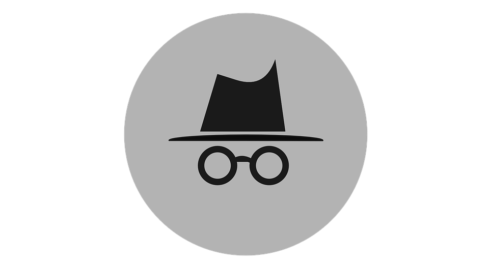

Você entrou no modo de navegação anônima
- Como outros usuários deste dispositivo não terão acesso à sua atividade, você pode navegar com mais privacidade. Isso não vai mudar a forma como os dados são coletados pelos sites que você acessa e pelos serviços que eles usam, incluindo o Google. Os downloads, favoritos e itens da Lista de leitura ainda serão salvos. Saiba mais
- O Chrome não vai salvar:ㅤㅤㅤㅤㅤㅤㅤㅤㅤㅤㅤㅤㅤㅤㅤÉ possível que sua atividade ainda esteja visível para:
- • Seu histórico de navegaçãoㅤㅤㅤㅤㅤㅤㅤㅤㅤㅤㅤㅤㅤㅤㅤㅤㅤㅤㅤㅤㅤㅤㅤㅤㅤㅤㅤ• os websites que você visita
- • Cookies e dados de sitesㅤㅤㅤㅤㅤㅤㅤㅤㅤㅤㅤㅤㅤㅤㅤㅤㅤㅤㅤㅤㅤㅤㅤㅤㅤㅤ• seu empregador ou sua escola
- Informações inseridas em formuláriosㅤㅤㅤㅤㅤㅤㅤㅤㅤㅤㅤㅤㅤㅤㅤㅤㅤㅤㅤㅤㅤㅤㅤㅤㅤㅤseu provedor de acesso à Internet